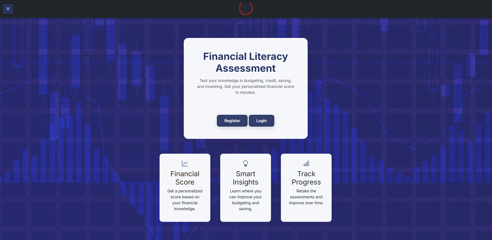
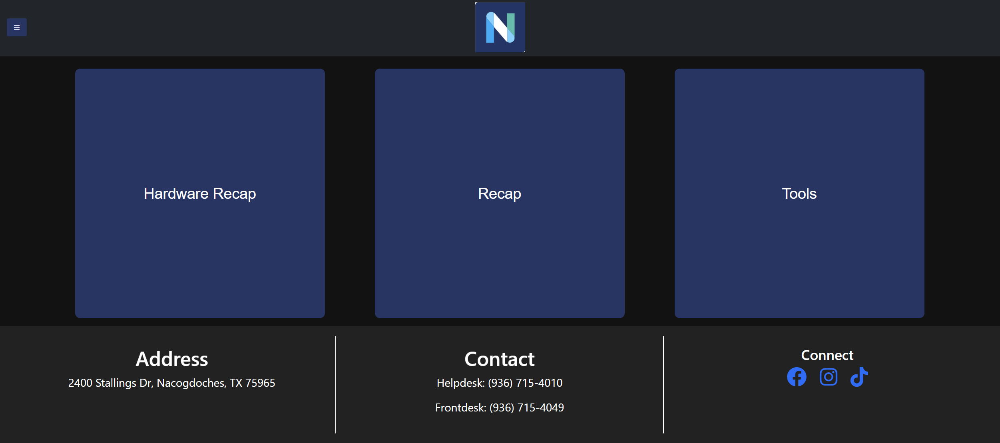
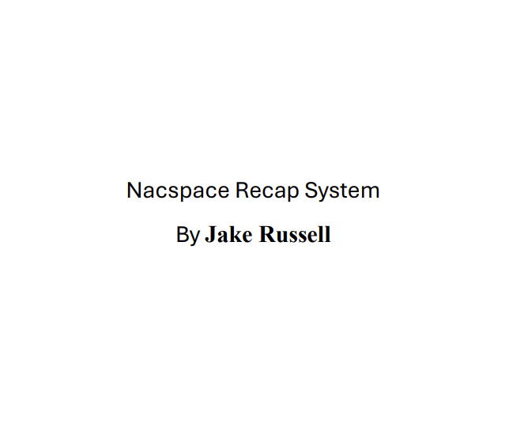
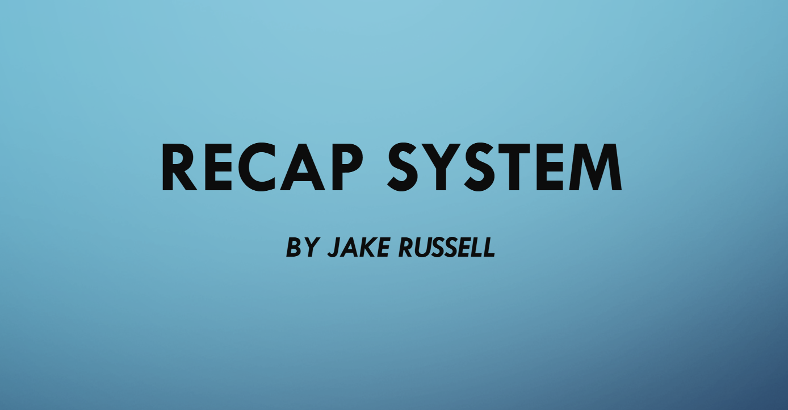
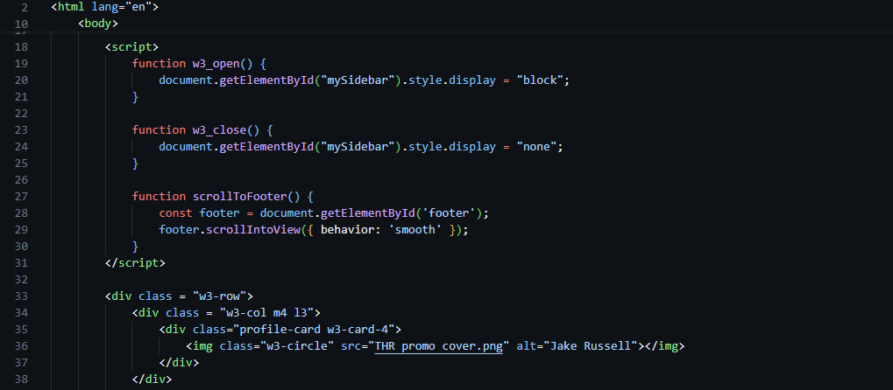
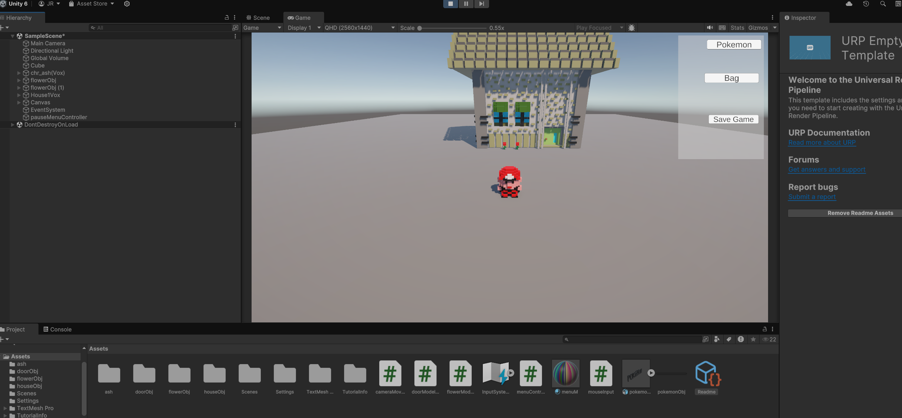
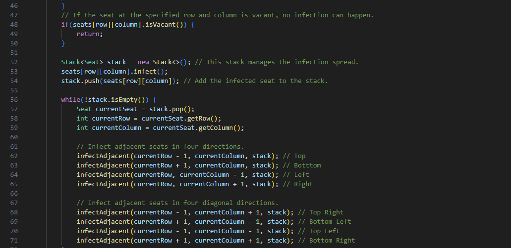
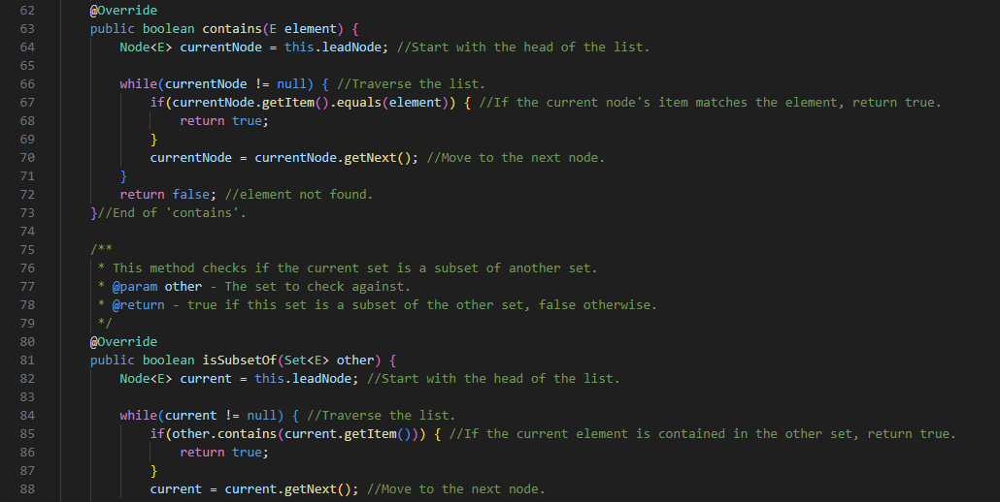

The Financial Literacy Tool is a web-based educational application developed using ASP.NET Core Razor Pages and SQL Server for a business called Legacy Institute for Financial Empowerment as part of my senior design class. The system was created to help users improve their understanding of personal finance concepts through interactive assessments, educational content, and progress tracking features. The application allows users to create accounts, complete financial literacy quizzes, save assessment progress, and review their results in a secure and user-friendly environment. SQL Server is used to manage and store user information, assessment data, scores, and financial content through a structured relational database design, while ASP.NET Core provides server-side processing, authentication, validation, and dynamic page rendering to ensure reliable performance and data integrity.

The Recap System is a web-based internal business application developed using ASP.NET Core Razor Pages and SQL Server as part of a class project that was later implemented at Nacspace to improve operational efficiency and time-tracking management. The system was designed to streamline the process of recording employee work activity, travel time, support tasks, and daily recap information through a centralized and user-friendly interface. In addition to employee recap and time-tracking functionality, the application also includes features for tracking company vehicles and toolkits, allowing the business to better manage internal assets and equipment usage. The system includes administrative management, validation logic, reporting functionality, and secure data handling to maintain accurate operational records and improve workflow organization. SQL Server is used to manage and store employee, asset, and recap data through a structured relational database system, while ASP.NET Core Razor Pages provides server-side processing, authentication, validation, and dynamic web functionality to ensure reliable performance and data integrity within the business environment.

I Created a comprehensive technical PDF documentation guide for the NACSpace Recap System that provides a detailed walkthrough of the system’s database structure, and relationships. The document was designed to support system understanding, maintenance, and future development by clearly explaining the architecture and operational logic of the application.

I Created a professional PowerPoint presentation showcasing the user interface and functionality of the Nacspace Recap System. The presentation highlights the application’s workflows, page designs, navigation structure, and core features to provide a clear visual overview of the system and its operational capabilities.

This project is a responsive personal portfolio website built with HTML, CSS, and JavaScript to showcase my skills, projects, work experience, and education.

This project is a 3d remake of Pokemon Emerald using voxel based envrioments and objects, coded entirely in C#, using the Unity game engine.

This Java project simulates the spread of infection in a movie theater.

This project showcases a set data structure using a linked list.